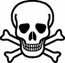
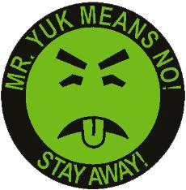

The chart below identifies several additional common poisons and some of the symptoms caused by each.
| Name of Poison: | Related Symptoms |
| acids (nitric, sulfuric) | burns around mouth, lips, eyes and digestive tract |
| lead | weight loss, sluggishness, vomiting |
| mercury | brain damage, birth defects, death |
| thallium | diarrhea, abdominal pain, skin rash, abnormal heart beat |

The UN standard symbol for a poisonous substance is the Jolly Roger, or skull and crossbones. However, many companies consider this symbol negative for purposes of marketing. Therefore, in North America the symbol, Mr. Yuk (see below), is replacing the Jolly Roger. Companies argue that the skull and crossbones symbol may attract children because of its association with pirates, but Mr. Yuk does not.
